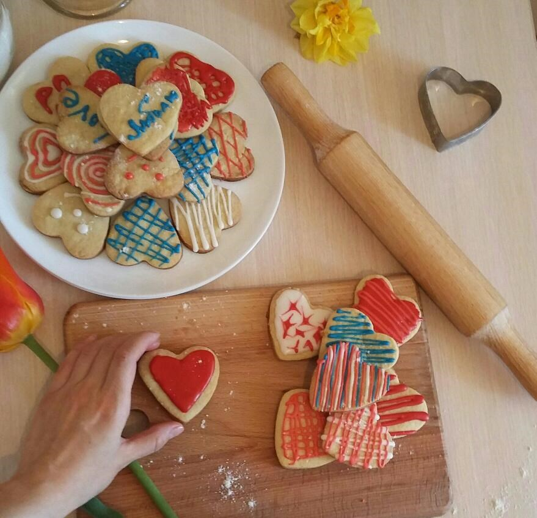

Песочное печенье с глазурью

ИНГРЕДИЕНТЫ (на 10 порций)
- Сливочное масло ... 400 г
- Сахар ... 12,5 столовых ложек
- Куриной яйцо ... 4 шт.
- Пшеничная мука ... 600 г
- Сода ... щепотка
- Сахарная пудра ... 2 стакана
ИНСТРУКЦИЯ ПРИГОТОВЛЕНИЯ
- Мягкое сливочное масло взбить с сахаром до состояния кремовой массы, всыпая сахар порциями.
- Добавить одно яйцо и щепотку соды, продолжая взбивать.
- Всыпать просеянную муку и вымесить пластичное тесто.
- Положить тесто в пакет и убрать в холодильник на 15–20 минут.
- Раскатать тесто на присыпанной мукой поверхности, вырезать желаемые формы, выложить на противень застеленной бумагой для выпечки.
- Выпекать в разогретой до 180 градусов духовке около 20–30 минут.
- Отделить белок от желтка, взбивая белок венчиком или вилкой при появлении первых пузырьков порциями всыпать просеянную сахарую пудру до получения плотной белой глазури (айсинга).
- Остывшее печенье покрыть глазурью.
- Наслаждаться печеньем.
Другие рецепты песочного печенья